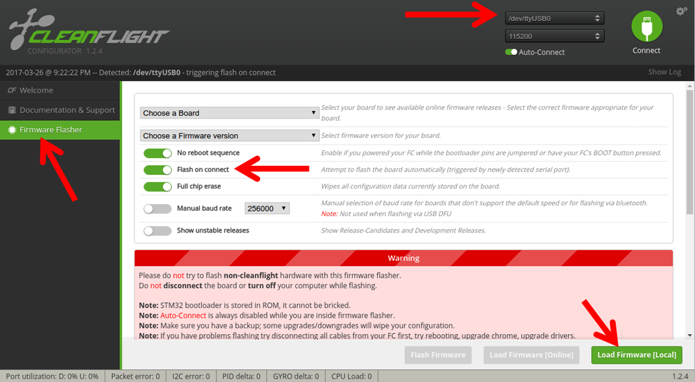
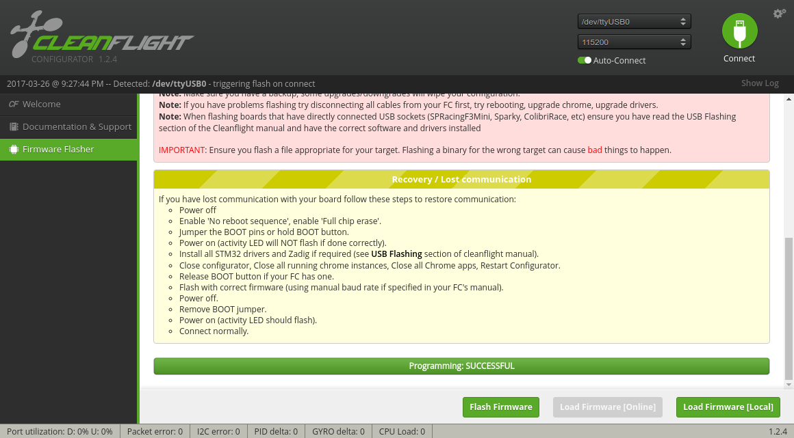

Flight Controller Setup¶
Note
This page contains instructions for flashing pre-built firmware binaries. For instructions on building and flashing from source, see Building and Flashing in the Developer Guide.
Compatible Hardware¶
Deprecation Notice
As of June 2019, plans are to deprecate support for the F1 in the near future. If you need to use an F1, you will need to retrieve an older version of the code that supports the F1. However, if there are issues, we will not be able to help you fix them.
As of January 2018, ROSflight is only supported on flight controllers with STM32F103 and STM32F405 processors, specifically, the Revo, Naze32, and Flip32. Both the 6-DOF and 10-DOF versions of each board are fully supported. We have had the most success with Revo boards purchased from HobbyKing. We have had weird issues with knock-off boards from Chinese vendors. An acro version (IMU-Only) can be found at readytoflyquads.
Serial Port Configuration¶
Tip
You can see which groups you are a member of by running groups $USER on the command line.
The following bullet point is necessary:
- Be sure your user is in the
dialoutandplugdevgroups so you have access to the serial ports. You will need to log out and back in for these changes to take effect.sudo usermod -aG dialout,plugdev $USER
If you experience issues, you may need one or both of the next two bullet points:
-
Temporarily stop the modem-manager (Sometimes, Linux thinks the device is a modem -- this command will be effective until next boot, or until you run the command again with
startin place ofstop)sudo systemctl stop ModemManager.service -
Add the custom udev rule so Linux handles the flight controller properly (copy the following as
/etc/udev/rules.d/45-stm32dfu.rules)# DFU (Internal bootloader for STM32 MCUs) SUBSYSTEM=="usb", ATTRS{idVendor}=="0483", ATTRS{idProduct}=="df11", MODE="0664", GROUP="plugdev"
Tip
You can permanently disable the ModemManager if you do not need it, then you won't have to disable it every time you reboot:
sudo systemctl disable ModemManager.service
disable with enable to revert (i.e. if you find some other program you use needs access to it).
Or you can uninstall it entirely from your system:
sudo apt purge modemmanager
Flashing Firmware using the Cleanflight Configurator¶
- Download the latest version of ROSflight for your board here.
-
Install the Cleanflight configurator - It is an extension to Google Chrome - link
-
Load the firmware, and flash using cleanflight configurator
- Open the configurator
- Open firmware flasher
- Connect your flight controller
- Make sure that you have selected the right port (or DFU in the case of F4-based boards)
- Select "Load Firmware (Local)"
- Select your *.hex file you downloaded earlier.
- Short the boot pins on your flight controller, unplug it, and and plug back in.

- If you scroll to the bottom of the screen, you will see the green bar indicate progress as the hex is flashed to the flight controller. You should then see something like the following:

- You're done! Great job.
Flashing Firmware from the Command Line¶
F4 Boards¶
You can use dfu-util to flash the firmware. This is helpful if you need (or prefer) a command-line interface.
- Install the dfu-util utility
sudo apt install dfu-util
- Download the latest rosflight-F4.bin file, found here
- Put the board in bootloader mode (short the boot pins while restarting the board by cycling power)
Tip
dfu-util auto-detects F4-based boards. Try dfu-util -l to make sure your board is in bootloader mode
- Flash the firmware to the device
dfu-util -a 0 -s 0x08000000 -D rosflight-F4.bin
F1 Boards¶
You can use stm32flash to flash the firmware to F1-based boards.
- Install the stm32flash utility
sudo apt install stm32flash - Download the latest rosflight.hex file, found here, to the current directory
-
Put the board in bootloader mode (short boot pins while restarting the Naze by cycling power)
-
Flash the firmware to the proper device (replace
/dev/ttyUSB0)stm32flash -w rosflight.hex -v -g 0x0 -b 921600 /dev/ttyUSB0